The Caesar cipher is one of the oldest known encryption techniques. It works by shifting every letter in the plaintext by a fixed number of positions in the alphabet. With only 25 possible shifts, it is trivially broken by brute force or frequency analysis. This level introduces the concept of a keyed shift cipher and demonstrates how to determine the shift value experimentally using a known-plaintext attack — encrypting a known input and comparing the output to derive the key.
🎯 End Goals
Identify that the encryption binary uses a Caesar cipher with a fixed key
Determine the shift value by encrypting a known plaintext and comparing the result
Decode the ciphertext OMQEMDUEQMEK to recover the password for krypton3
SSH into krypton3 using the decoded password
🪜 Steps to Reproduce
SSH into krypton2 and navigate to /krypton/krypton2/ to read the README and inspect available files
Set up a working directory in /tmp, symlink the keyfile, and set permissions
Run the encrypt binary on a known input to determine the cipher shift
Use the derived shift to decode the krypton3 password file using an online Caesar cipher tool
SSH into krypton3 using the decoded password
🧠 Analysis
Step 1 — Read the level instructions Logged in as krypton2 and ran cd /krypton/ then ls to confirm available level directories. Inside /krypton/krypton2/, ran cat README which explained that the level uses a Caesar cipher with a fixed rotation, the key is stored in keyfile.dat, and a working directory in /tmp is required to use the encrypt binary.
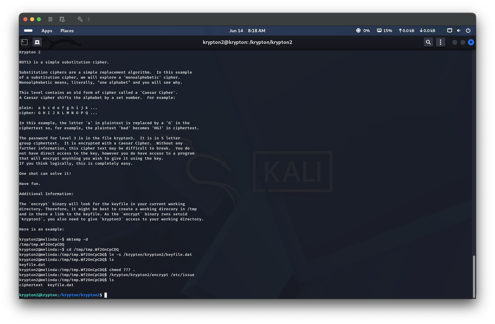
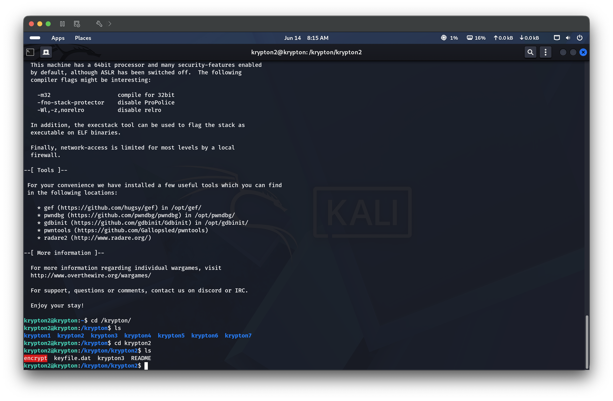
Step 2 — Explore the level directory and inspect the encrypt binary Ran cd /krypton/krypton2 and ls, then ls -la to inspect permissions. The encrypt binary has the setuid bit set (-rwsr-x---), meaning it runs as krypton2 and can read keyfile.dat even without direct access. Also present: keyfile.dat and krypton3 (the encrypted password file).
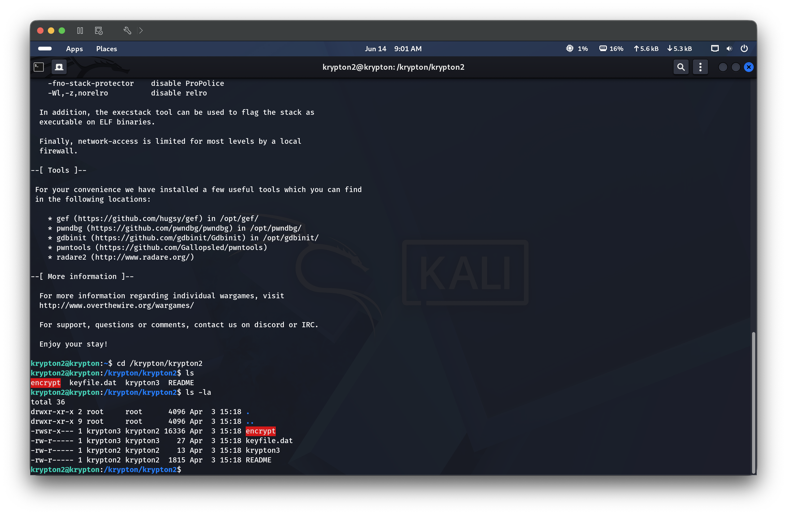
Step 3 — Set up a working directory in /tmp Created a temporary working directory with mkdir /tmp/<dir>, changed into it, and created a symlink to the keyfile with ln -s /krypton/krypton2/keyfile.dat. Ran ls to confirm the symlink was in place.
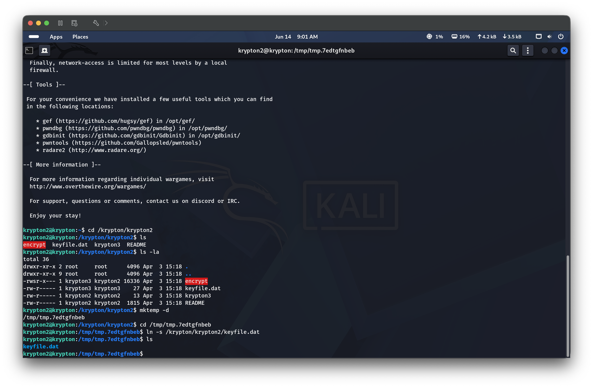
Step 4 — Test the encrypt binary to determine the cipher shift Ran echo "a" > test.txt to create a known-plaintext input, then chmod 777 . to allow the setuid binary to write output to the current directory. Confirmed permissions with ls -la. Ran /krypton/krypton2/encrypt test.txt — the binary produced a ciphertext file. Opened it with nano ciphertext which showed M, meaning a (position 0) encrypts to M (position 12), confirming a shift of 12. The full password ciphertext OMQEMDUEQMEK is in /krypton/krypton2/krypton3.
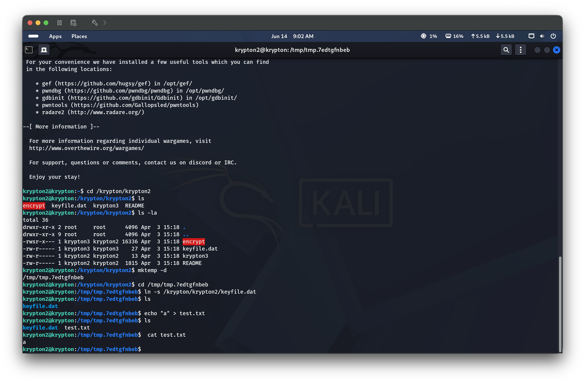
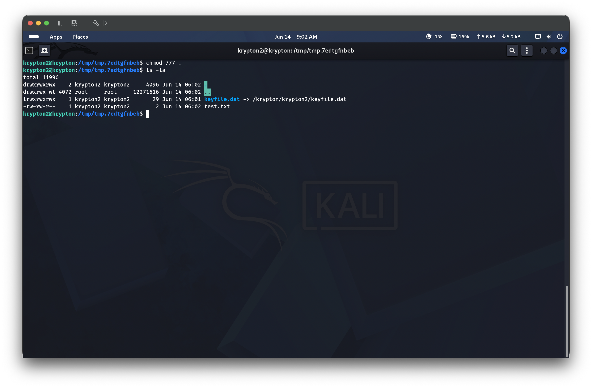
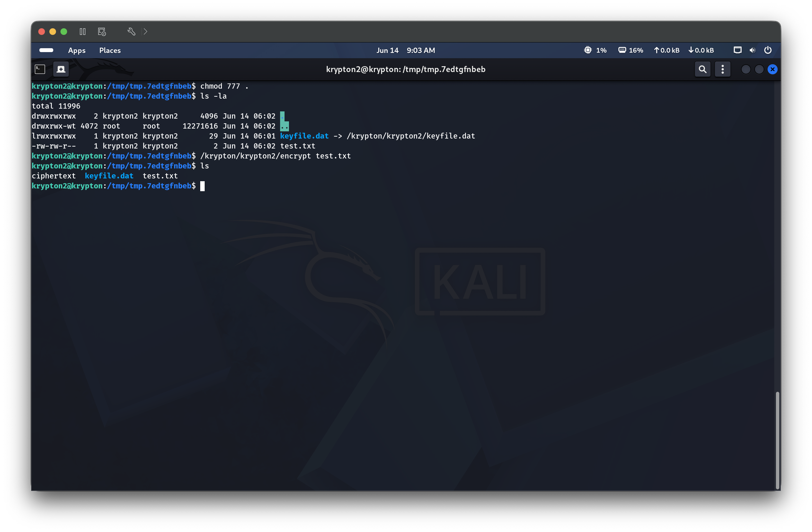
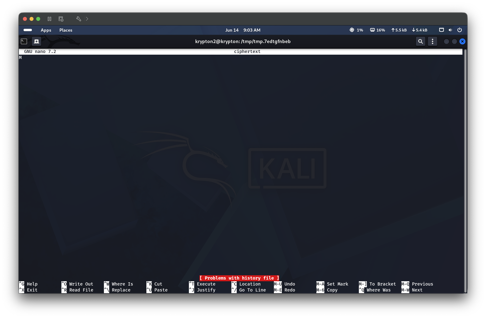
Step 5 — Decode the krypton3 password using cryptii Entered the ciphertext OMQEMDUEQMEK into cryptii.com’s Caesar cipher decoder. Using a shift of 14 (equivalent to reversing a shift of 12 in a 26-letter alphabet), the decoded plaintext was CAESARISEASY.
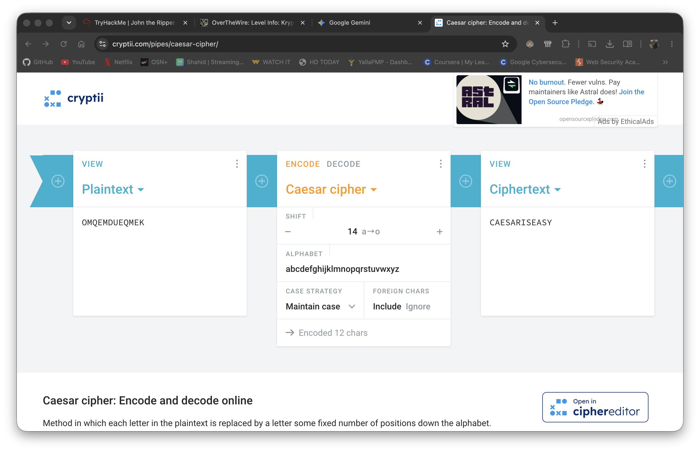
Step 6 — SSH into krypton3 with the decoded password Ran ssh krypton3@krypton.labs.overthewire.org -p 2231 and authenticated with password CAESARISEASY. The OTW welcome banner confirmed a successful login to the krypton3 shell.
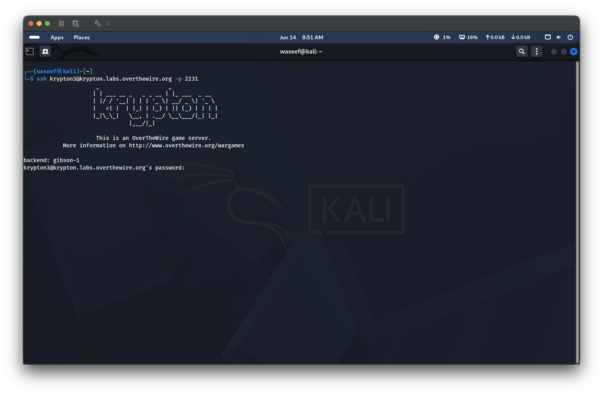
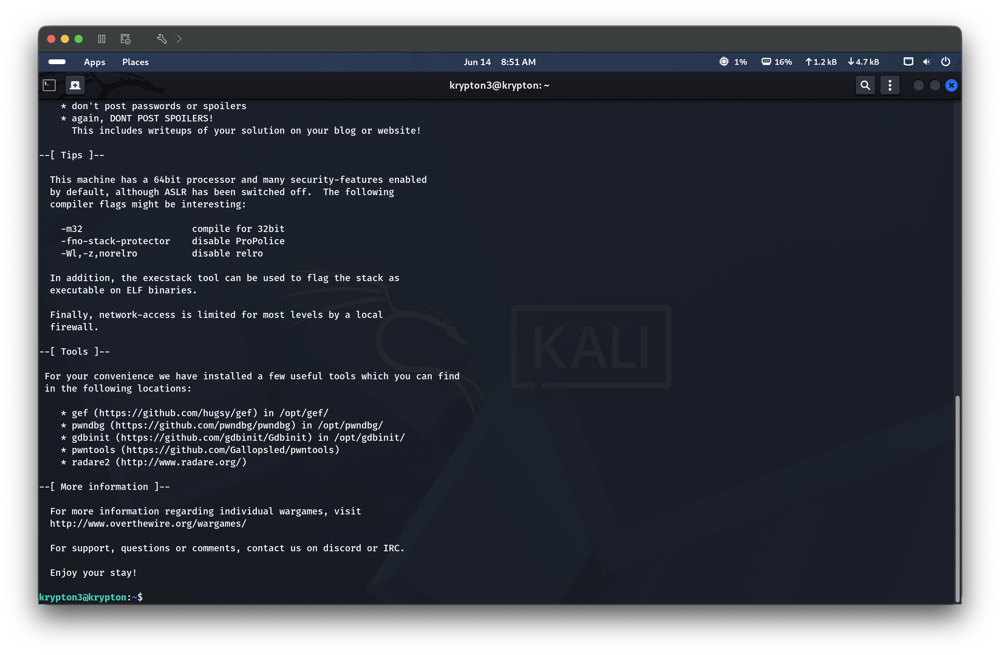
🔑 Key Concepts Learned
The Caesar cipher shifts each letter by a fixed amount — with only 25 possible keys, it offers no real security
A known-plaintext attack lets you derive the shift by comparing a known input to its encrypted output — here, encrypting a and seeing M revealed the shift
The encrypt binary uses a setuid bit, allowing it to read a protected keyfile without exposing it directly — a common privilege-escalation pattern in CTFs
Symlinks inside /tmp are a clean way to give a setuid binary access to files it needs without copying sensitive data
Online tools like cryptii.com make brute-forcing a Caesar shift trivial once the ciphertext is known